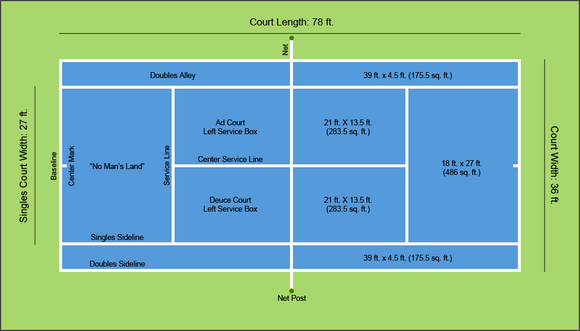
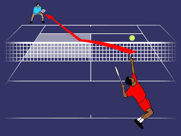
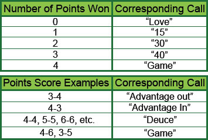

Boundaries
There are different boundaries for singles (1 player on each side of the court) and doubles (2 players on each side). In singles, the lines second farthest to the end of the court on the sides are the out of bounds line. In doubles, the farthest line to the sides are out of bounds. As long as the ball lands inside the white lines, it's in bounds and if it hits the line it is still considered in.
{kind=link}
Serving
To begin play, the ball must be served by one player to the other. The ball can be hit in any way as long as the ball lands in the box on the opposite side of the court. The server has two chances to make this happen. If he/she is unable to, it is called a double fault and he/she loses the point. If the ball hits the net and lands in, the opponent may call a "let" The server then gets an another chance to serve the ball in. If the ball hits the net and does not land in, it is a fault and the server takes his/her second serve. The first serve always starts from the right side. After each point the serve moves to the other side.
Scoring
The scoring in tennis is quite unique. To win a match, one must win 6 sets; and to win a game, one must win 4 points. Points are scored when the ball goes out or the opponent is unable to return the ball. The points are not counted one by one (See below for the scoring guide). In addition to scoring 4 points, one person has to score 2 more points than the other. This part is scored by calling advantage in or advantage out. Advantage in means the serving side has the lead and advantage out means the non-serving side has the lead.
Miscellaneous
- The ball can only bounce once on each side of the court. If it bounces twice before being returned, the person who could not return the ball loses the point.
- The ball can go around the net posts. As long as it lands in on the other side, it counts.
- When serving, both feet must be off the court at the moment the ball is hit. If your feet are in the court, it's called a foot fault and you either take your second serve or lose the point depending on when the foot fault occurs.
- The ball can not touch any body part or any accessory being worn. It may only come in contact with the racket. If the ball touches your body or one of your accessories, you lose the point.